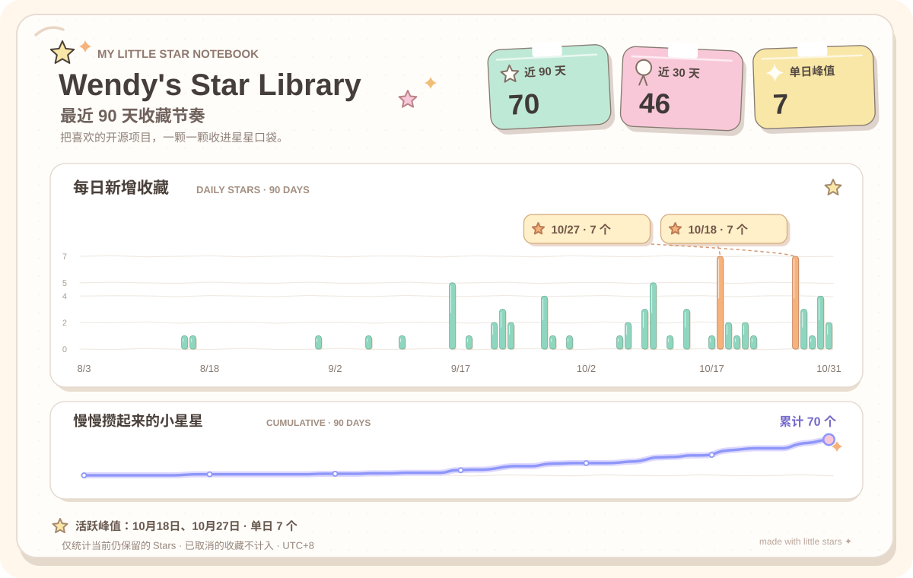

01 / COLLECTING DIARY
星星收藏日记 ✳
有些日子，灵感会像星星一样，一颗接一颗地亮起来。
✧ 过去 90 天的珍藏时光

ⓘ 图表仅统计当前仍在收藏的仓库，不代表项目本身的全球 Star 增长。
THE COLLECTION小小收藏，
满满灵感。✿
满满灵感。✿
珍藏的项目—颗闪闪发光的小星星
分类书架—个不同的灵感抽屉
最近收藏—近 30 天收集的新发现
JUST FOR YOU · WEEKLY DISCOVERY
猜你喜欢
最近心动的技术主题，可能还有这些新鲜的小发现。推荐来自真实 GitHub 热度数据。
本周推荐还在准备中，稍后再来看看。
根据最近收藏兴趣匹配 · 已排除现有收藏 · 热度按 GitHub 日历数据统计
THE LITTLE HONORS · MY CONSTELLATION
星星成就馆
一路收集的灵感，变成一枚枚可以珍藏的小勋章。
MY LITTLE ACHIEVEMENTS
— / 42
已获得的手账勋章
✿ 奖章不只是数字，也是纪念。
把你的每次发现都认真收好。
收藏分类、作者缘分、工具偏好，都能变成这本图鉴的一页。以后整理掉旧项目，曾获得的勋章也不会消失。
我的徽章图鉴
每一枚都有自己的小故事。
✳ 每日自动更新 · 首次达成后永久留存 · 启用前已取消收藏的历史无法完整恢复
02 / THE SHELVES
我的灵感书架 ✿
不同的小兴趣，都有属于自己的彩色抽屉。
✧
暂时没有找到星星
试试换个搜索词，或者看看别的分类吧。
WEEKLY LITTLE CHECK-IN—
个项目值得回头看看
✩ ✳ ✩
先看看，再决定。
你的收藏，由你做主。
你的收藏，由你做主。
先看看这些小星星
来自每周人工复核建议；点击黄色星星可申请取消收藏。